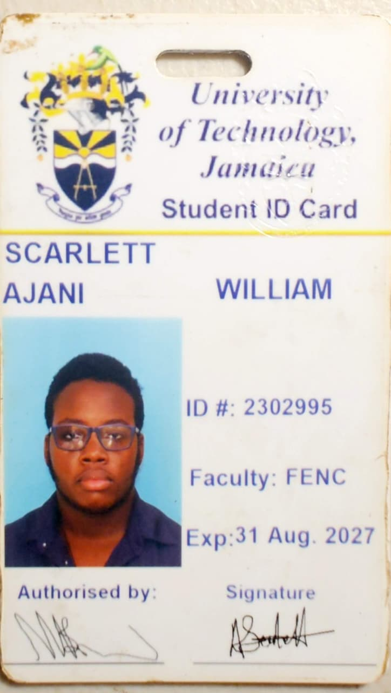

Professional

Ajani Scarlett
Future Digital Forensic Examiner & GRC Consultant
Email: scarlett.ajani@gmail.com
GitHub: github.com/AjaxxStachio
Professional Summary
Innovative, Purpose-driven, Creative and Task-driven aspiring Digital Forensic Examiner with a strong foundation in static and dynamic reverse code analysis, NIST Framework and Compliance Regulatory Guide, strong foundation in computer science, and ethics. Eager to bridge technical teams and user needs to create responsible and resiliant softwares.
Education
BSC Computer Network and Security
Major - Cybersecurity
University of Technology, Jamaica - 2027
SANS FOR500 Windows Forensics
2027 - 2030
GIAC Certified Forensic Examiner (GCFE)
2028 - 2030
Future Experience
Digital Forensic Examiner - Jamaica Forensic Association
2028 - 2035
- Collaborated with other examiners and researchers to develop the JUNGIST malware counter, which prevented the rapid file deletion and file encryption (CVE-2028-7621)
- Lead and oversaw the forensic case with the notorious drug dealer Harry Wilther, where we examined all devices on seen and on person that lead to arrest of multiple members of the criminal group
Digital Forensic Consultant - Freelance Consultant
2030 - 2035
- Assisted with the restucturing of B.W.L Forensics Firm digital forensic branch, now seated on the board of directors
- Helped Williams and Bowls established there newly implemented Forensic Training Programme to assist, employees of the company be more aware of potencial scams and socail engineering techniques.
Compliance Officer & Auditor - J&W Solutions
2031 - present
- Designed a audit framework
- Oversaw all audit trails for the forensic branch .
- Managed a remote team of 4 volunteers.
Projects & Assignments — CIT2011 S1 AY2026
Below are links to all completed lab/tutorial assignments for this course.